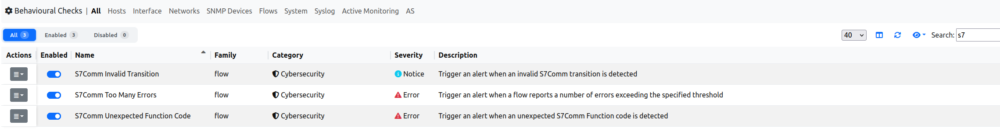
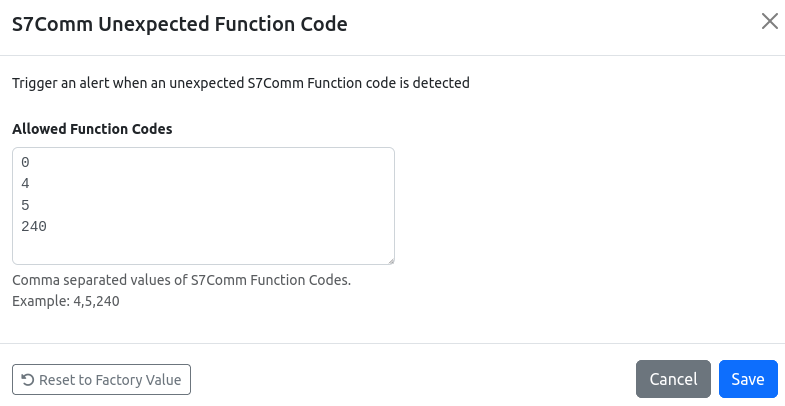
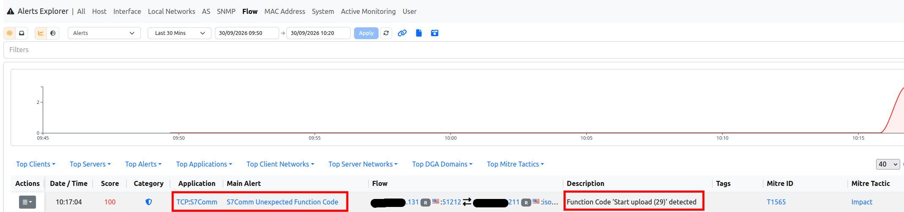

2. S7Comm
Примечание
Эта функция доступна только в том случае, если ntopng собирает потоки из nProbe через ZMQ (см. Использование ntopng с nProbe). Трафик S7Comm анализируется nProbe, который экспортирует информацию протокола в ntopng: эта информация недоступна на пакетных интерфейсах, где ntopng анализирует трафик самостоятельно.
S7Comm (S7 Communication) — это собственный протокол Siemens, используемый ПЛК SIMATIC S7 для взаимодействия с HMI, системами SCADA и инженерными станциями (например, для чтения и записи переменных ПЛК, загрузки и скачивания программ, запуска и остановки ПЛК). Он работает через ISO-on-TCP, обычно через TCP порт 102.
Для каждого потока S7Comm nProbe отслеживает используемые функциональные коды, переходы между ними и ошибки и экспортирует их в ntopng. ntopng отображает эту информацию в деталях потока, сохраняет ее вместе с потоком и использует для обнаружения непредвиденного поведения.
2.1. Информация о потоке
Потоки S7Comm отображаются в списке потоков с пометкой TCP:S7Comm протокол приложения. При открытии сведений о потоке S7Comm в обзоре потока сообщается протокол, а в верхней панели отображается дополнительная информация. S7Comm вкладка. Проблемы в разделе перечислены оповещения, инициированные потоком (см. Поведенческие проверки ниже).

Обзор потока S7Comm
S7Comm Вкладка содержит информацию S7Comm потока:

Подробности потока S7Comm
График переходов (вверху слева): каждый узел — это код функции, используемый в потоке, а каждая стрелка — это переход от кода функции к следующему. Чем больше переходов, тем толще стрелка. Циклы на одном и том же узле означают, что последовательные сообщения имеют один и тот же код функции (например, запрос и его ответ). График можно увеличивать/уменьшать с помощью колеса мыши и перемещать, перетаскивая его.
Краткое содержание (вверху справа): количество Ошибки сообщается о потоке и количестве отдельных Функциональные коды использовал.
Функциональные коды (внизу слева): список кодов функций, используемых в потоке, с указанием количества раз (Использование) каждый из них был использован.
Коды функций сообщаются с их именем и числовым (десятичным) значением, например. Start upload (29). Это функциональные коды, известные как ntopng; другие коды сообщаются как Unknown (<code>).
Код |
Имя |
Описание |
|---|---|---|
0 |
CPU услуги |
CPU функции (например, чтение диагностики или системной информации) |
1 |
Переход режима |
Изменение режима работы CPU |
4 |
Читать Вар |
Чтение переменных ПЛК |
5 |
Напишите Вар |
Запись переменных ПЛК |
26 |
Запросить загрузку |
Начало загрузки блока (станция инжиниринга → ПЛК) |
27 |
Скачать блок |
Заблокировать загрузку |
28 |
Загрузка завершена |
Конец загрузки блока |
29 |
Начать загрузку |
Начало загрузки блока (ПЛК → станция проектирования) |
30 |
Загрузить |
Заблокировать загрузку |
31 |
Завершить загрузку |
Конец загрузки блока |
40 |
ПИ-Сервис |
Вызов программы (например, запуск ПЛК, сжатие блоков) |
41 |
ПЛК Стоп |
Останов ПЛК |
240 |
Настройка связи |
Настройка сеанса, отправляется в начале каждого соединения. |
В приведенном выше примере станция проектирования загружает некоторые блоки из ПЛК (Start upload → Upload → End upload), читает и записывает некоторые переменные, останавливает ПЛК (PLC Stop) и перезапускает его (PI-Service).
Информация S7Comm также доступна для исторических потоков, когда потоки сбрасываются до ClickHouse (см. Исторические потоки): данные исторического потока сообщают то же самое S7Comm вкладка.
Наконец, сервер потока S7Comm (т. е. ПЛК) помечается значком S7Comm Сервер тег (см. Теги). Тег можно использовать, например, для вывода списка всех ПЛК в Хозяева странице, выбрав S7Comm Сервер в Теги фильтр:

Тег сервера S7Comm
2.2. Поведенческие проверки
Информация S7Comm используется тремя проверками поведения потока, доступными в Настройки → Поведенческие проверки (тип s7 в поле поиска, чтобы перечислить их). По умолчанию все они отключены.


Поведенческие проверки S7Comm
2.2.1. Конфигурация
Каждая проверка включается соответствующим переключателем и настраивается нажатием кнопки действий.
2.2.1.1. Неожиданный функциональный код S7Comm
Вызывает оповещение, когда поток использует код функции, которого нет в списке разрешенных кодов функций. Предупреждение срабатывает при первом использовании кода функции в потоке. Коды необходимо указывать в виде десятичных значений (шестнадцатеричные значения не поддерживаются), по одному в строке или через запятую.


Конфигурация неожиданного функционального кода S7Comm
По умолчанию разрешенные коды функций: 0 (CPU услуги), 4 (Читать Вар), 5 (Напишите Var) и 240 (Настройка связи), т. е. функции, обычно используемые HMI и системами SCADA для мониторинга и управления процессом. При такой конфигурации предупреждение срабатывает всякий раз, когда программа ПЛК загружается или загружается, а также всякий раз, когда ПЛК останавливается или запускается. Список можно адаптировать к сети; например:
Если загрузка и выгрузка программы являются частью обычных операций и необходимо сообщать только об остановках и запусках ПЛК, также разрешите функциональные коды загрузки/выгрузки:
0,4,5,26,27,28,29,30,31,240.В сети, где ПЛК только считываются (например, системой мониторинга), удалите
5(Write Var), чтобы сообщалось о любой записи в ПЛК:0,4,240.
Обратите внимание, что любой код функции, отсутствующий в списке (включая те, которые неизвестны ntopng), вызывает предупреждение.
2.2.1.2. S7Comm Слишком много ошибок
Вызывает оповещение, когда количество ошибок, о которых сообщается для потока, достигает настроенного порога (по умолчанию: 5 ошибок). Многие ошибки могут указывать на неправильную конфигурацию, неисправность или на то, что кто-то исследует ПЛК (например, пытается получить доступ к несуществующим ресурсам).

Конфигурация S7Comm слишком много ошибок
2.2.1.3. Неверный переход S7Comm
Вызывает предупреждение, когда поток сообщает о переходе между двумя функциональными кодами, который никогда раньше не наблюдался в потоке. Для каждого потока ntopng сначала изучает переходы между функциональными кодами для период обучения; как только период обучения закончится, любой новый переход вызывает предупреждение. Период обучения настраивается в Настройки → Предпочтения → OT Протоколы → Период обучения S7Comm; значение по умолчанию — 6 часов, минимальное — 1 час.

Период обучения S7Comm
2.2.2. Оповещения
Оповещения S7Comm — это оповещения потока: о них сообщается в Обозреватель оповещений (под Поток) и в Проблемы раздел сведений о потоке.


Оповещения S7Comm
В описании оповещения сообщается подробная информация о событии:
Тревога |
Описание (пример) |
|---|---|
Неожиданный функциональный код S7Comm |
|
S7Comm Слишком много ошибок |
|
Неверный переход S7Comm |
|